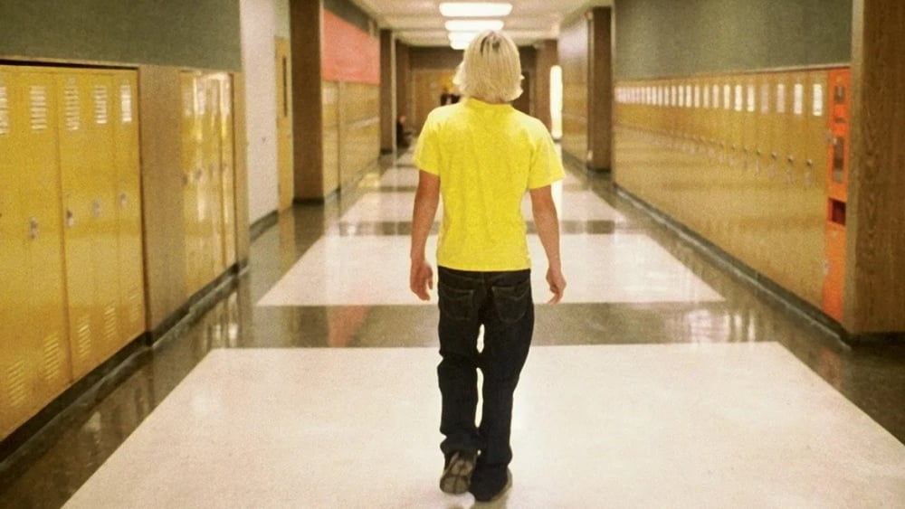

-
20 years later, 'Elephant' remains a vile piece of exploitation
by Mitchel Green - May 12, 2023
|
mitchelgreen34@gmail.com

source: The Movie Database
Of the three American films that have won the Palme d'Or at the Cannes Film Festival in the 21st century, the first of these winners, Gus Van Sant's 2003 film “Elephant,” has disturbingly remained the most relevant despite tackling a subject rooted in its time. The film, based primarily on the Columbine High School shooting in 1999, follows several unwitting characters in the moments leading up to the tragedy.
Twenty years after its premiere at Cannes, at a time when there seems to be a never-ending stream of mass gun violence in this country, one might think the film retains the same power it had during its initial release. Indeed, those that were moved by the film's distressing nature when it was first released may still find it just as tragic. But the idea that it has maintained some emotional weight suggests the film worked on any level in the first place. In reality, “Elephant” remains one of the most repulsive, ill-conceived works of art of the 21st century.
Recreating the events of the Columbine massacre is not the film's big misstep. Artists should tackle social problems and historical events with unflinching honesty. But the way Van Sant approaches this story turns it from potentially heavy social commentary to gross spectacle. It's not spectacle in the exciting blockbuster action sense. The film doesn't look gorgeous or glamorize any of its content. But it feels empty, inhuman. It feels made by a person fascinated by the idea of the event rather than any of the people affected.
The paper-thin characters don't help this interpretation. Throughout the film, we follow the days of several students at the school right before the shooting, but we don't learn much about them. We occasionally get glimpses of interests, like Elias's (Elias McConnell) interest in photography, or personal problems, like John's (John Robinson) alcoholic father, but these children lack any real depth.
Van Sant assumes the audience will care about them because his naturalistic style tries to convince them that these are real people. But this illusion is shattered by the terrible performances of the actors playing the students. None of these characters act like real people. Their speech and movements are wooden. Their actions are bizarre. The students who are supposed to be friends have no chemistry with one another.
“Elephant” never gives the impression that Van Sant understands any of these young people. The film gives us scenes that bring up topical social issues but don't say anything meaningful about them. Students talk about cliche teenage activities and problems in broad, vague ways. Van Sant may not understand these characters, but I don’t think he cares. They are all just vessels for cheap tension built from the fact that we know they're going to die.
The film makes even stranger use of its form than its content. In the scenes before the shooting, Van Sant uses precise, elegant tracking shots to follow the students during their average school day. At first, it seems like he is using formal beauty to set the audience up for a terrorizing, disorienting shift in style once the shooting begins, but he also films the final tragedy with that same beauty. The dissonance destroys any sense of realism, taking the punch away from what should be the most heart-wrenching sequence in the film.
Viewing this through the lens of our current moment, I think you could make the argument that the continuity in style between the school day and the shooting itself is using the film's form to comment on how these shootings have become so normalized in our society that there isn't much distinction between the two. That cold, numb style is reminiscent of how the constant news stream of more gun violence can make us feel. But, at the time of “Elephant”'s release, school shootings were not nearly as prevalent as they are now, so I don't think Van Sant was consciously trying to make that statement.
I keep coming back to the question, “Why?” Why does Van Sant tackle this material in the way that he does? Why does this film lack any depth or nuance? Why does “Elephant” appear to be pointless? Perhaps that's the question Van Sant wants running through the audience's heads. He wants to reflect that feeling of confusion brought on anytime senseless acts of violence take place. But then, why do I need to feel that way watching a movie that seems to add nothing to the conversation? I ask that question almost daily now, and I need more out of this film than just a reflection of my thoughts.
In that sense, maybe “Elephant” did work better back in 2003 for audiences who weren't constantly confronted with the question, “Why does this keep happening?” But in 2023, the film plays as pointlessly cruel, uncaring, and exploitative. Its visual storytelling is confused and at odds with the material, and it never makes the audience care enough about the people affected by the tragedy about to afflict them. It's one of the worst films ever to win the Palme d'Or.